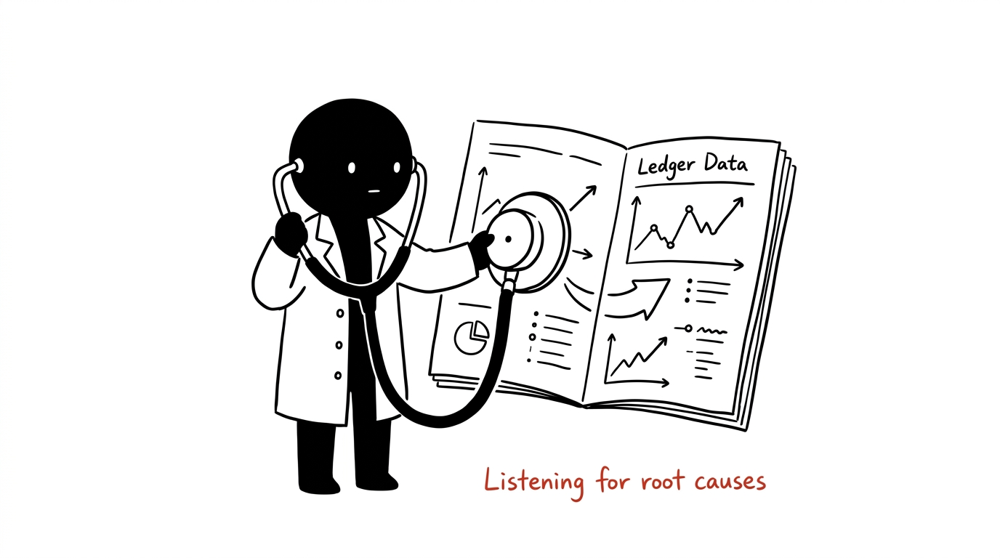
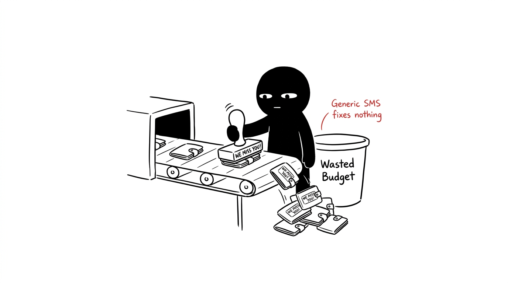
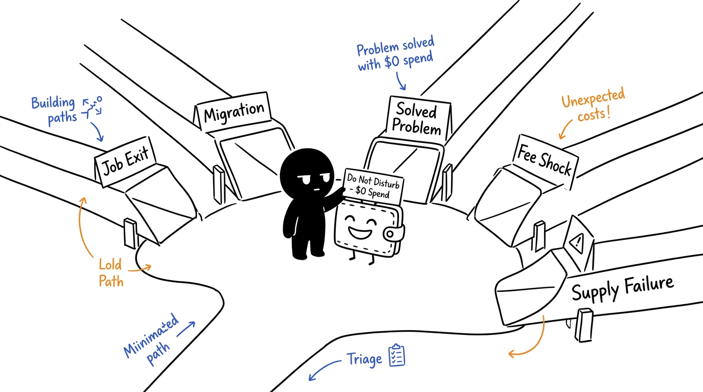
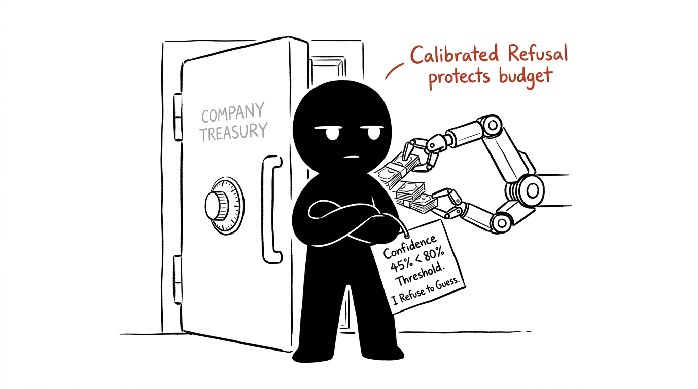
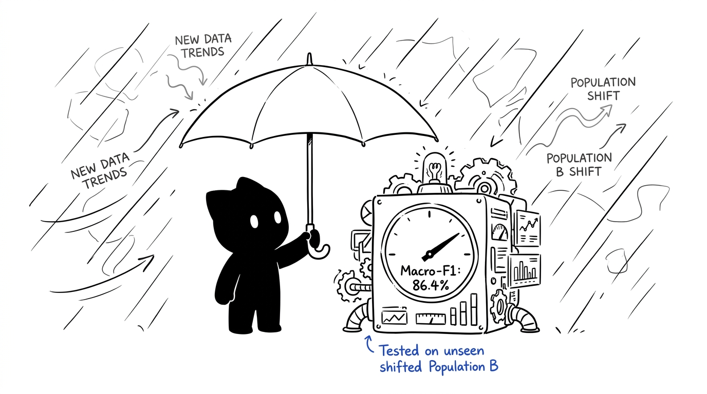
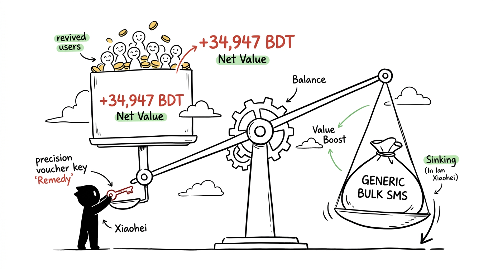
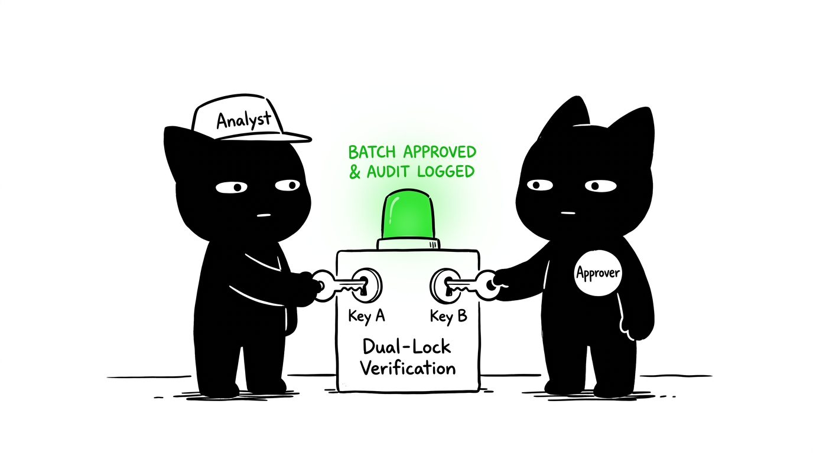

Mobile Financial Services have millions of dormant accounts. Today, operators treat dormancy as a single symptom with blanket "We Miss You" SMS spam.

The standard heuristic ("silent ≥ 3 weeks → send mass SMS") blindly treats every inactive user identically.


When signals are ambiguous, standard ML forces a guess. WhyQuiet refuses attribution if confidence < 80% (τ) or top margin < 10% (δ).


Trained on Population A (4.8k train) and evaluated strictly on unseen, shifted Population B (3k eval) with 2.5× higher noise and altered pay cycles.
Evaluated on Population B (3,000 wallets) across 1%, 4%, and 8% sweeps. Price-aware routing dynamically gates remedies until response clears cause break-even hurdles (1.39% to 6.94%).


Built for enterprise compliance: analysts propose batches, approvers authorize them. Self-approval is blocked at the database trigger level.
proposer != approver strictly enforced in PostgreSQL.W-XXXXXX pseudonymous identifiers.